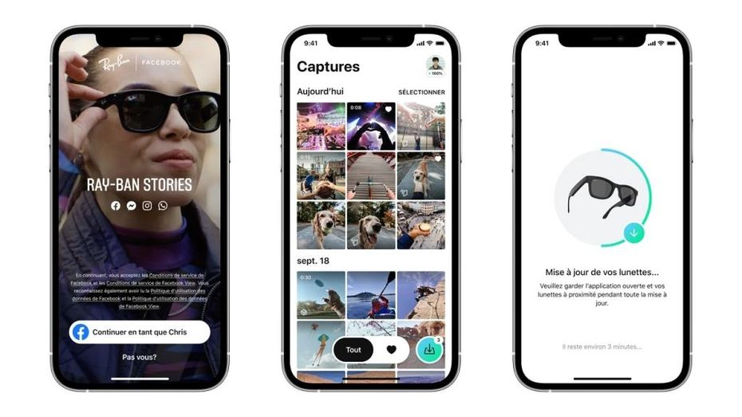

Les lunettes connectées de Meta, les Ray-Ban Stories, débarquent en France en avril
Les Ray-Ban Stories, lunettes connectées issues d'un partenariat entre Meta et EssilorLuxottica,
seront bientôt disponibles en France. Elles permettent de capturer photos et vidéos tout en gardant les mains
libres et d'interagir par des commandes vocales simples avec son smartphone.
Les lunettes connectées Ray-Ban Stories, fruit d'un partenariat entre Meta et EssilorLuxottica, débarquent en France. Les deux entreprises annoncent ce 17 mars 2022 une commercialisation dans l'Hexagone à partir du 14 avril au prix de 329 euros. Elles sont aussi dès aujourd'hui disponibles en Autriche, en Belgique et en Espagne.
Pour rappel, les Ray-Ban Stories sont équipées de deux caméras 5 mégapixels qui permettent de rapidement
capturer des photos et vidéos depuis le point de vue de l'utilisateur, à la manière des Spectacles de Snap.
Leur point fort est leur style, puisqu'elles ressemblent à des Ray-Ban classiques. Elles fonctionnent avec
un smartphone et disposent de micros et haut-parleurs qui permettent de passer des appels, d'écouter de la
musique ou d'utiliser des commandes vocales. Elles sont sorties en
septembre dernier aux Etats-Unis, Canada, Italie et dans quelques autres pays.
Nouveaux modèles et fonctionnalités étendues
Les fonctionnalités des lunettes vont être un peu améliorées. La capture vidéo, jusqu'à présent
limitée à des enregistrements de 30 secondes, sera étendue à une minute au mois d'avril. Les commandes
vocales seront aussi disponibles en français et en italien. Même chose pour l'application accompagnant
les lunettes, appelée Facebook View, qui sera traduite en français, espagnol, néerlandais et allemand.
Elle sert à importer, modifier et partager les visuels capturés.
Meta a également ajouté la possibilité d'envoyer des messages à l'oral vers Messenger et d'écouter ceux
que l'on reçoit, et les lunettes pourront bientôt émettre des notifications sonores pour alerter si la batterie
est faible ou l'espace de stockage presque plein. Enfin, quatre nouveaux choix de coloris et de verres sont prévus
(toujours pour avril), portant le choix à un total de 28 modèles différents.
L'épineuse question du respect de la vie privée
Ces évolutions nuisent à certaines sociétés vivant de la publicité, qui ne peuvent plus vendre des annonces
aussi ciblées qu’auparavant. Selon Google, Apple a limité « brutalement les technologies utilisées par les
développeurs et les annonceurs », et son approche « n’est pas efficace ». Toujours selon Google, en l’absence
d’alternative fournie aux publicitaires, ceux-ci pourraient se tourner vers des solutions de tracking plus
discrètes, qui finalement, « nuiraient encore plus à la confidentialité des utilisateurs ».
Le groupe assure qu’il continuera à proposer les outils publicitaires actuellement sur sa plate-forme
« pendant au moins deux ans », le temps d’en concevoir et tester de nouveaux. Délai qui s’allongera sans
doute avant que ces modifications touchent la majorité des utilisateurs, car les nouvelles versions
d’Android peuvent mettre longtemps à atteindre la plupart des smartphones. Google promet de consulter
les développeurs comme les régulateurs, et de partager régulièrement l’avancée de ses travaux.

A noter que Meta essaie de soigner les aspects touchant au respect de la vie privée avec ces lunettes,
qui pourrait être utilisées pour filmer quelqu'un à son insu. Un indicateur LED blanc s'allume lorsque la
capture est activée, et l'entreprise annonce qu'elle va mener une campagne marketing pour informer les gens
sur ce type d'appareils, et qu'elle insistera sur les bonnes pratiques à respecter auprès de ses utilisateurs.
Tout ceci participe à un effort de longue durée dans le but de préparer l'arrivée de vraies lunettes de
réalité augmentée, qui nécessiteront par nature de "voir" et "entendre" énormément de choses pour fonctionner
correctement. On se rappelle de la réception quasi-hystérique de Google Glass aux Etats-Unis, notamment car
certains utilisateurs avaient filmés des gens sans leur consentement dans des espaces publics. Pour assurer le
succès de ces appareils et de "l'informatique ambiante" de manière générale, Meta devra donc prouver au plus
grand nombre
que ses avantages dépassent largement ses potentiels inconvénients.